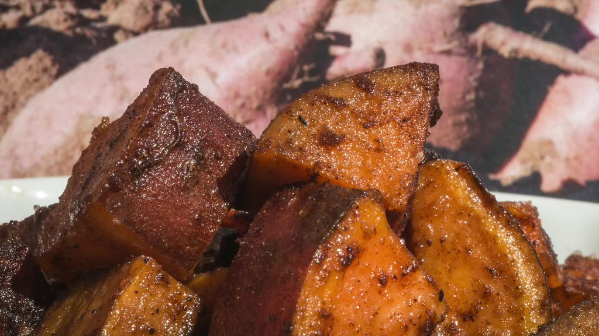

Adobong Baboy

Adobong Baboy is one of the favorite Filipino dishes.
Adobo came from the Spanish word
"adobar" meaning "marinade".
Ingredients:
- 500g Pork Belly / Loin - cut into 1-inch pieces
- 4 cloves garlic, finely chopped
- 1 white medium onion, finely chopped
- 2 medium potatoes, cut into cubes and boiled (optional)
- 1⁄2 tsp dried oregano
- 1⁄2 tsp dried fresh thyme
- 1 tsp black pepper to taste
- salt to taste
- 3 bay leaves
- 1⁄2 cup dark soy sauce
- 1 tsp white vinegar
- 2 tbsp brown sugar
- 1⁄2 cup water
- 2 tbsp cooking oil
Instructions:
- Taking oil in a saucepan over medium heat.
-
Add in the chopped onions and garlic, saute it and let it swear for 1
minute.
- Add pork and cook for 3 minutes. Stir for a while to cook.
- Add in the water and increase the heat to high.
- Let the water boil and for the pork to cook in it.
-
Decrease the heat to medium once the water has evaporated and only a
little is still left in the saucepan.
-
Add in all the spices, soy sauce and boiled potatoes to the pan and
let it simmer for 5 minutes or until the consistency has thickened to
that of a gravy.
- Serve.